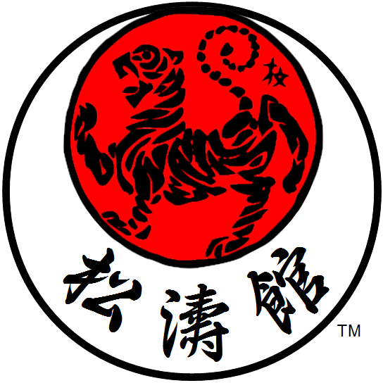

O Kiai-dojo foi fundado em 1991 sensei XXX de karate-do, com sua experiência tanto como competidor com histórico de vitórias em campeonatos estaduais e nacional e como técnico da seleção Paranaense e Brasileira de JKA.
Nossa missão consiste em transmitir as técnicas e filosofia do estilo Shotokan,respeitando as tradições e fornecendo uma estrutura moderna para otimizar o treinamento e progresso dos alunos
O karate traz benefícios além da saúde física, contribuindo no desenvolvimento do foco, disicplina entre outros. Além disso, pode ser praticado por pessoas de todas as idades. Para mais informações leia a nossa seção sobre o karate ou entre em contato.
Venha desafiar seus limites, treinar seu corpo e mente, além de trocar experiências conosco! Estamos esperando por você!
Marque agora mesmo sua aula experimental!
Oss!